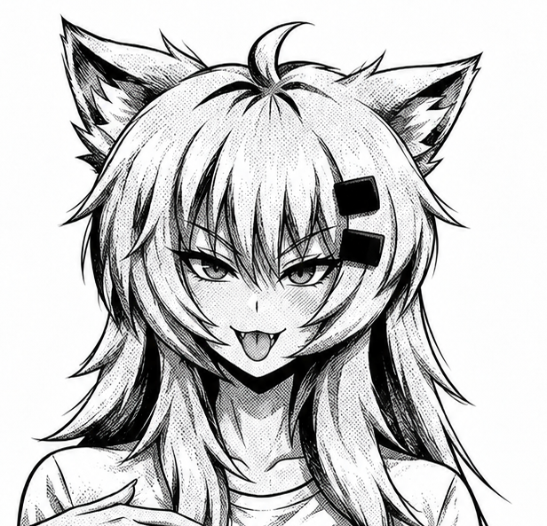

IA 2× · GPU
AnimeScaler
Status do vídeo
Parado
Abra um vídeo HTML5 e ative o upscaler.
Configurações avançadas
Diagnóstico local
Registra desempenho e erros durante o uso. Sem imagens ou endereços dos vídeos.
Para tela cheia, use os controles do player original.
Vídeos cross-origin/DRM podem ser bloqueados pelas regras de segurança do navegador.